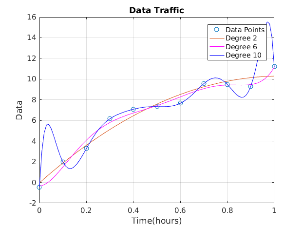

Question 7
A final year Telecom Engineering student collected data on the traffic from a Telecom operator within a period of 1 hour. The data can be represented as follows: x=0:0.1:1; y=[-0.447 1.978 3.28 6.16 7.08 7.34 7.66 9.56 9.48 9.30 11.2] The student analyzed the data and sought to establish a relationship between the traffic and time. Three different functions of degree 2, 6 and 10 were considered; determine and plot the line of worst fit as well as the line of best fit using the MSE in each case.
clc; clear; close all; x=0:0.1:1; y=[-0.447 1.978 3.28 6.16 7.08 7.34 7.66 9.56 9.48 9.30 11.2]; a2=polyfit(x,y,2); a6=polyfit(x,y,6); a10=polyfit(x,y,10); xi=linspace(0,1,101); yi2=polyval(a2,xi); yi6=polyval(a6,xi); yi10=polyval(a10,xi); % Computing mean square values y2hat=polyval(a2,x); y6hat=polyval(a6,x); y10hat=polyval(a10,x); MSE_2=mean((y2hat-y).^2) MSE_6=mean((y6hat-y).^2) MSE_10=mean((y10hat-y).^2) plot(x,y,'o',xi,yi2,'-',xi,yi6,'m',xi,yi10,'b'),title('Data Traffic'),... xlabel('Time(hours)'),ylabel('Data'),legend('Data Points','Degree 2',... 'Degree 6','Degree 10'),grid on, box on
MSE_2 =
0.3882
MSE_6 =
0.1654
MSE_10 =
1.5949e-20
